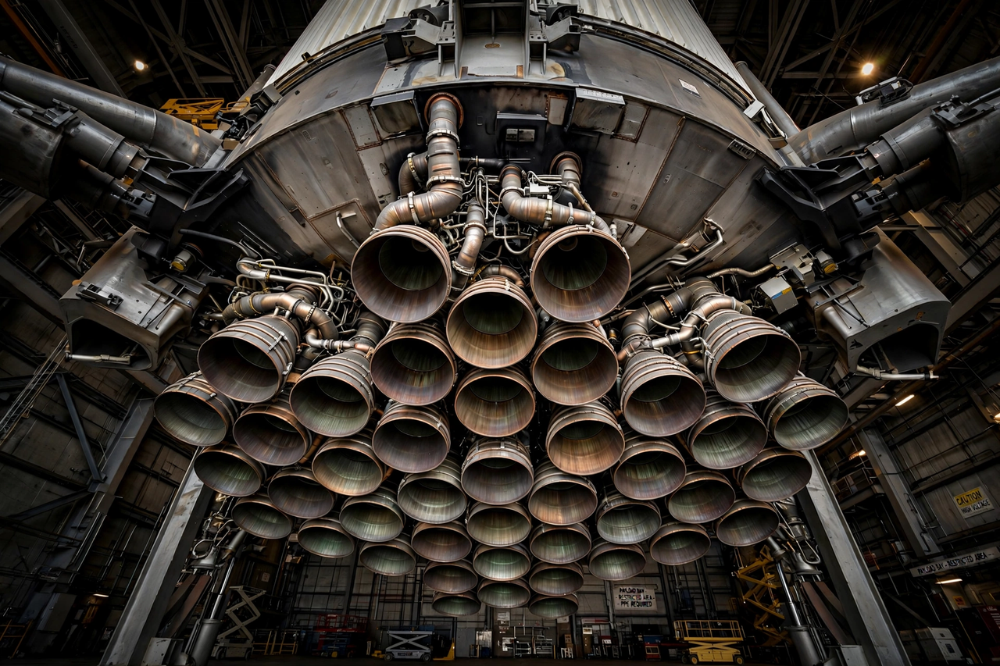

Raptor (rocket engine)
From Wikipedia, the free encyclopedia
| Raptor (rocket engine) | |
|---|---|
| Manufacturer | SpaceX |
| Type | LOX / methane full-flow staged combustion |
| Used on | SpaceX Starship |
| Thrust | ~2.3–2.8 MN per engine (by version) |

Raptor engines clustered under Super Heavy.Raptor is a reusable rocket engine developed by SpaceX to power its SpaceX Starship vehicle. Burning liquid oxygen and liquid methane in a full-flow staged combustion cycle — among the most efficient and most demanding engine cycles ever flown — it is built for the rapid, aircraft-like reuse that Starship's design depends on, and for propellant that can in principle be manufactured on Mars from water and carbon dioxide.
A Starship stack uses 33 Raptors on the Super Heavy booster and 6 on the upper stage. Successive versions (Raptor 1, 2 and 3) have roughly doubled thrust while becoming simpler and cheaper to build; Raptor 3's clean, mostly internal plumbing — much of the engine 3D-printed — drew wide attention when revealed in 2024.
Why methane and full-flow
Methane burns cleaner than kerosene, leaving less soot in reusable engines, and unlike hydrogen it is dense and easy to store. The full-flow cycle passes all propellant through preburners driving the turbopumps, squeezing maximum performance from the fuel — at the cost of formidable engineering, previously attempted only in Soviet and American test programmes that never reached flight.
See also
SpaceX Starship · Merlin (rocket engine) · Rocket engine · SpaceX